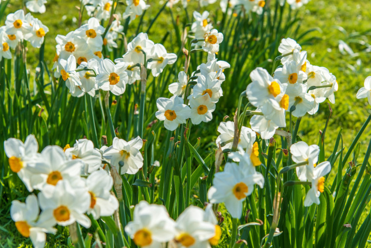
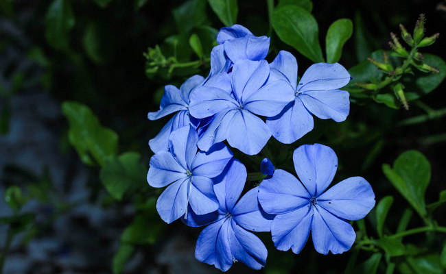
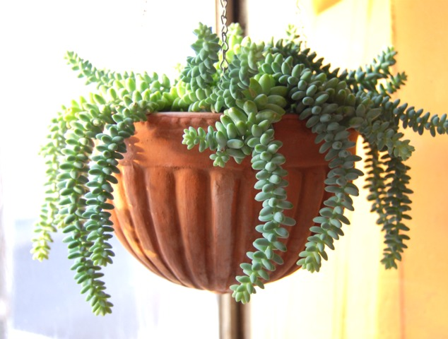
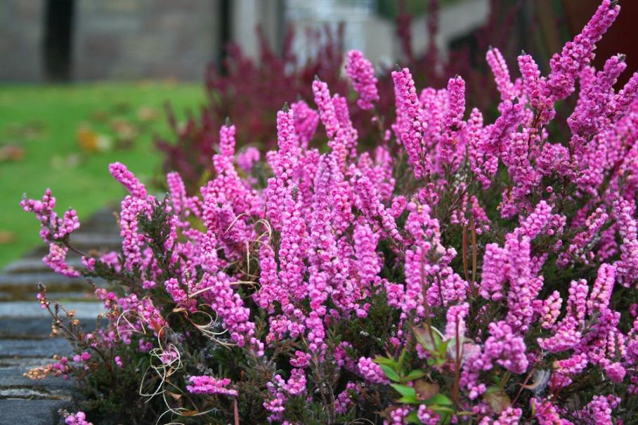

Une saison, une fleur.
Qui n'a jamais rêvé d'avoir un balcon fleuri toute l'année ? Dans cette page, vous pourrez trouver les fleurs les plus faciles à entretenir sur votre balcon pour chaque saison.
Au printemps...

Les narcisses
Parfumées, élégantes et peu exigeantes, les narcisses ont tout bon. Elles s'épanouissent aussi bien en jardinière qu'en pot et mettront une jolie touche de soleil à votre balcon avec leur couleur jaune vif. Appartenant à la famille des plantes à bulbes, elles s'épanouiront au printemps si vous les plantez dès septembre : leur floraison court de début mars jusqu'à mi-mai. Elles refleurissent chaque année : entretien minimum garanti ! Un achat malin et économique qui se mariera très bien avec vos autres plantes.En été...
Le plumbago
Parfumées, élégantes et peu exigeantes, les narcisses ont tout bon. Elles s'épanouissent aussi bien en jardinière qu'en pot et mettront une jolie touche de soleil à votre balcon avec leur couleur jaune vif. Appartenant à la famille des plantes à bulbes, elles s'épanouiront au printemps si vous les plantez dès septembre : leur floraison court de début mars jusqu'à mi-mai. Elles refleurissent chaque année : entretien minimum garanti ! Un achat malin et économique qui se mariera très bien avec vos autres plantes.
En automne...

Les sedums
Cette famille de plantes très résistantes fleuries toute l’année. Cette variété en particulier, appelée sedum spectabile ou « orpin d’automne », égaye votre balcon comme son nom l’indique, dès la fin du mois de septembre. Supportant très bien la culture en pot, il faudra juste rabattre la plante à la fin de sa floraison quand les tiges commencent à sécher, pour être sûr qu’elle soit aussi belle l’année suivante. L’entretien de cette plante est très aisée : le sédum d'automne tolère toutes les conditions ou presque, mais pour les meilleurs résultats, et surtout pour assurer des tiges solides qui ne s'écrasent pas, plantez-le au plein soleil dans une poterie avec de la terre pas trop riche et bien drainée. Le sedum est très facile à multiplier. On peut le diviser au printemps, mais il se bouture aussi très facilement: il s'agit tout simplement de casser une tige en début d'été et de la repiquer en pleine terre. Elle apportera dès la première année une touche de couleur pour les derniers beaux jours.Et pour l'hiver...
La bruyère d'hiver
La bruyère Erica est très généreuse dans sa floraison qui commence à l’automne pour se prolonger jusqu'au printemps. De légères petites fleurs couvrent les rameaux de grappes variant entre le blanc et rose jusqu'à lavande, ornant un fin feuillage vert doux, bronze ou doré selon les variétés.